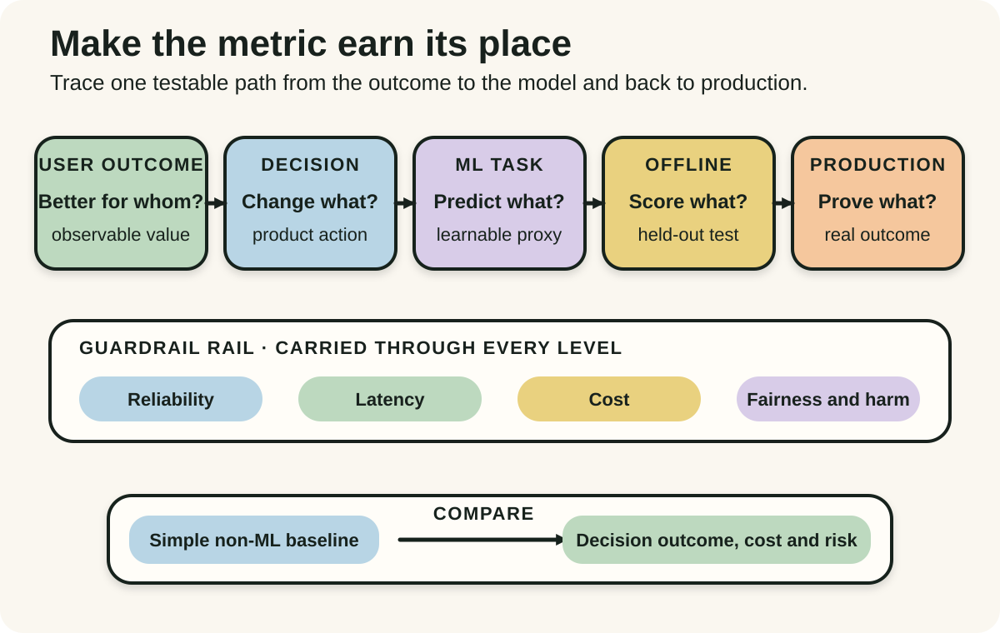
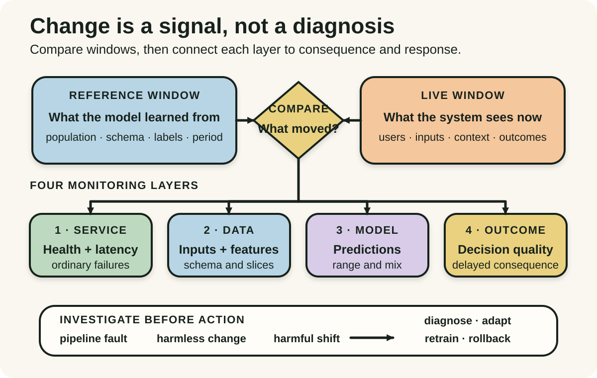
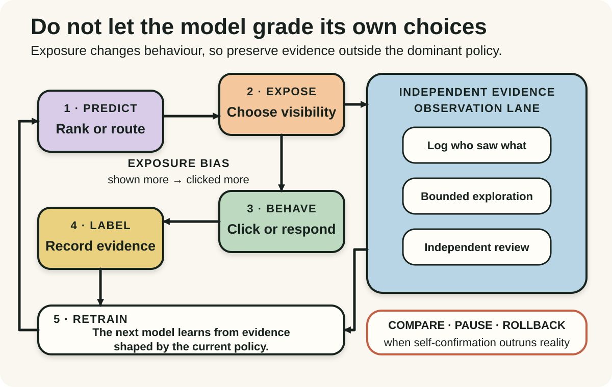

Daily lesson ·
Designing Machine Learning Systems
Design the decision system around the model: connect its proxy to the real objective, watch the data and outcomes move, and prevent predictions from quietly manufacturing their own evidence.
Idea 1
Start with the decision, not the model #
The idea
Huyen begins machine-learning systems design with the reason the system exists. A business or user objective must be translated into an ML objective, then into a task, evaluation measures and system requirements such as reliability, scalability, maintainability and adaptability. The model is one component in that chain, not the final purpose.
An offline score is therefore a proxy rather than a finish line. A model can improve accuracy, loss or another technical measure while the product decision stays no better, becomes too slow or costly, or shifts harm onto a poorly represented group. The design needs an explicit baseline and a link from model performance to an observable outcome that matters.

Why it matters
Teams can optimise a measurable proxy long after it stops improving the real outcome. Making the ladder explicit exposes missing assumptions early, clarifies what success means in production and creates a fair comparison with a simpler rule or workflow.
Apply it today
Choose one proposed AI feature and write the user outcome and the decision it is meant to improve without naming a model.
Add the ML task, one offline measure, one production outcome, one guardrail and the simplest non-ML baseline. Circle any link that currently depends only on hope.
Caveat or failure mode
A business objective is not automatically a good objective. Revenue, engagement or throughput can hide delayed harm, unequal errors and work pushed onto other people. Define the outcome with affected stakeholders, use multiple guardrails where necessary and retain a way to stop the system even when its headline metric rises.
Idea 2
Production data is a moving target #
The idea
Huyen treats deployment as the beginning of a changing relationship between a model and the world. Training data is finite and historical, while production inputs, user populations, interfaces, policies and meanings continue to change. Differences can appear as train-serving skew, covariate shift, label shift or concept drift, and ordinary pipeline defects can imitate those patterns.
Monitoring therefore needs layers. System health, raw inputs, features and predictions can produce early signals, while outcome measures reveal whether the decision is still useful. A changed distribution is an investigation cue, not automatic proof of model failure, and a stable aggregate can still hide a damaged slice or a delayed label.

Why it matters
Model code can remain unchanged while its operating assumptions decay. A layered view shortens diagnosis, avoids treating every anomaly as drift and makes it harder for a healthy service dashboard to conceal deteriorating decisions.
Apply it today
Pick one model or data-driven rule and name its training reference period, current production population and the outcome label that arrives last.
Add one signal at each layer: service, input, prediction and outcome. For the most important alert, write the first diagnostic action instead of only a threshold.
Caveat or failure mode
Distribution tests can be noisy, sensitive to window choice and weakly related to actual harm. Labels may arrive late or never, and monitoring every feature creates alert fatigue. Prioritise consequential slices and decision outcomes, validate alerts against incidents and keep human review for ambiguous or high-stakes changes.
Idea 3
The model changes the data it learns from #
The idea
Huyen describes a degenerate feedback loop when a model's outputs influence the interactions later treated as evidence for that same model. A recommender exposes highly ranked items more often, those items receive more clicks, and the next model reads the clicks as proof that the ranking was right. Exposure and preference become difficult to separate.
These loops can narrow choices, amplify popularity or reproduce a biased selection process even while measured engagement improves. The system needs evidence that is not fully manufactured by its current policy, such as logged exposure, bounded exploration, comparison groups, independent labels or human review, plus a safe route to interrupt the loop.

Why it matters
Product behaviour is not passive data. Once a model controls exposure, its labels describe both user response and the policy that shaped the opportunity to respond. Recording and testing that mechanism prevents self-confirmation from masquerading as learning.
Apply it today
For one ranking, routing or triage system, draw prediction, exposure, response, label and update as a loop.
Circle every place the current model controls what can be observed. Add one safe independent signal, one diversity or slice check and one condition that pauses automated learning.
Caveat or failure mode
Random exploration is not automatically safe or ethical, especially in health, employment, credit, safety or other high-stakes decisions. Independent evidence can require causal design, consent, fairness review and domain expertise. Use the least harmful valid method and never withhold necessary service merely to improve an experiment.
Knowledge check · 6 questions
Learning check
Answer all 6, then check your answers. Your first result stays in this browser, and each explanation appears after you check. A 3-question review can appear on the homepage from tomorrow.
6 questions not yet answered.
Today's experiment · 10 minutes
Draw one production learning loop
- Choose one AI-assisted decision and write the user outcome it should improve.
- Draw the ladder from decision to ML task, offline measure and production outcome, then add one non-ML baseline.
- Write the reference data window and one live signal for inputs, predictions and delayed outcomes.
- Draw how the prediction changes exposure or behaviour before the next label is collected.
- Add one independent evidence lane, one guardrail and one condition that pauses or rolls back the system.
Observable result: You finish with one inspectable objective ladder, one moving-data check and one feedback-loop safeguard instead of treating the model as an isolated artefact.
Retrieval practice
Spaced recall
- From Seeing Like a State: what important behaviour could an ML dashboard omit while still making the system look legible and healthy?
- From Continuous Discovery Habits: which risky belief about the user's decision should be tested before investing in a more complex model?
Verification
Source notes
These links support the attributed claims and edition details; applications and extensions are labelled in the lesson.
- O'Reilly: Designing Machine Learning Systems, May 2022 first edition and full contents
- Chip Huyen: official book repository with chapter summaries and resources
- O'Reilly chapter 2: objectives, requirements and ML problem framing
- Chip Huyen: data distribution shifts, monitoring and degenerate feedback loops
- NeurIPS 2015: Hidden Technical Debt in Machine Learning Systems
- Google Research: What's Your ML Test Score? production-readiness rubric
- Google Research: Data Validation for Machine Learning
One-sentence takeaway